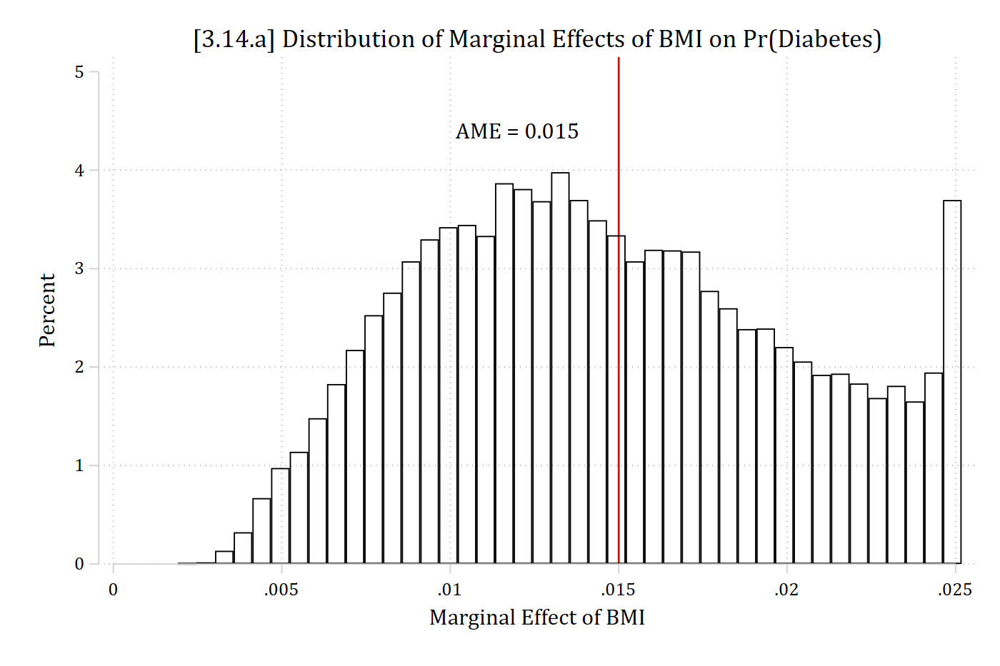
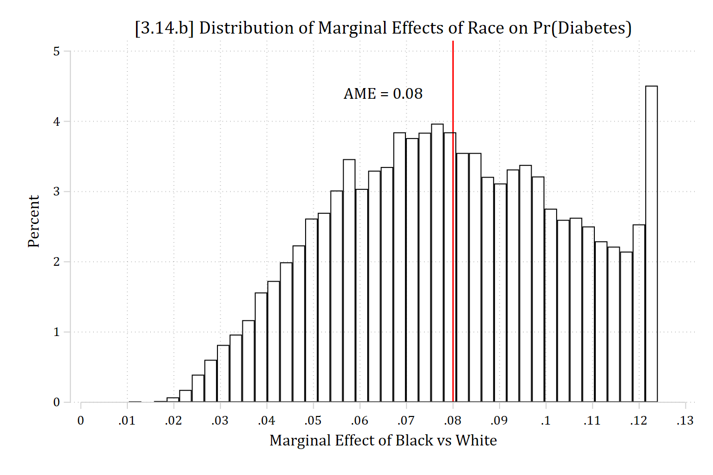
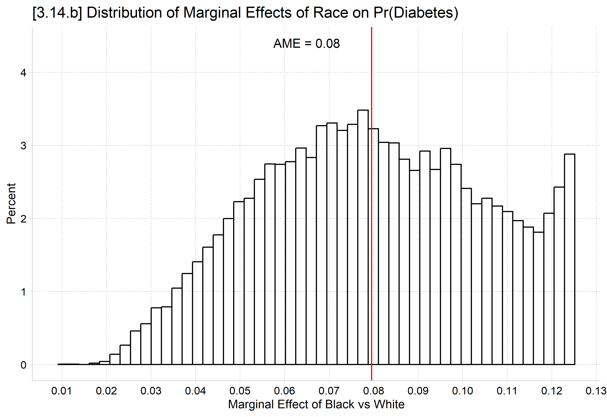
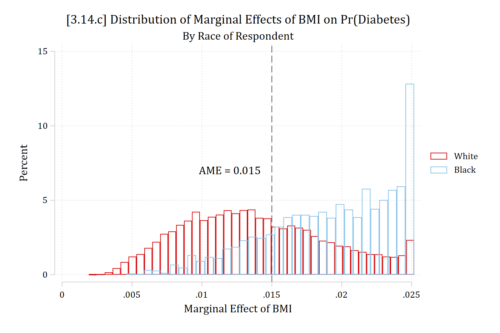
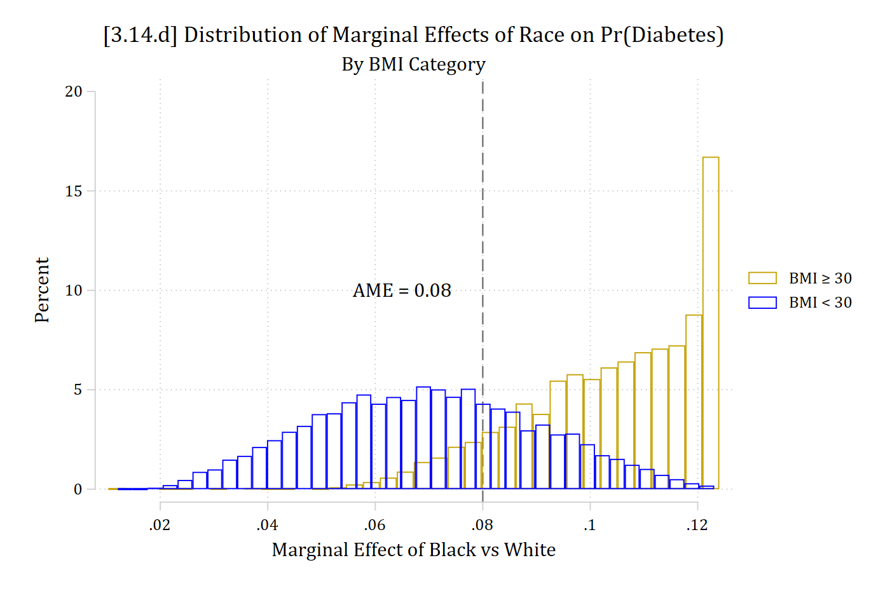

Effects will vary for each observation because start and end values will differ (e.g., \({start}_{i}\) = your current age; \({end}_{i}\) could be your current age + 1) and the models are inherently nonlinear
Effects will also vary because value of control variables (\(\mathbf{x}_{-k,i}\)) will also differ for each observation and the models are inherently interactive
The average marginal effect (AME) averages these effects over all observations in the data:
E.g., Racial differences might depend on the levels of other variables
We already know from our marginsplot that the effect of BMI is different across the range of BMI—which means it varies for different people as people have different BMIs (due to nonlinearities in the effect of BMI)
Effect of BMI might also depend on other factors accounted for in the model (e.g., for men vs women; for people of different ages; etc.)
This suggests the importance of looking at the distribution of marginal effects
This is not commonly done, but should be (and is now easy to do in Stata 14+)
(hrs06_dmv.dta | Health & Retirement Study 2006 | DMV Workshop)
quilogit diabetes c.age i.black c.bmi i.woman i.ed4cat, oreststore diabmod* Distribution of marginal effects (AMEs)margins, dydx(black) gen(MEs_black)
Average marginal effects Number of obs = 17,012
Model VCE: OIM
Expression: Pr(diabetes), predict()
dy/dx wrt: 1.black
------------------------------------------------------------------------------
| Delta-method
| dy/dx std. err. z P>|z| [95% conf. interval]
-------------+----------------------------------------------------------------
black |
Black | 0.080 0.009 8.862 0.000 0.062 0.097
------------------------------------------------------------------------------
Note: dy/dx for factor levels is the discrete change from the base level.
margins, dydx(bmi) gen(MEs_bmi)
Average marginal effects Number of obs = 17,012
Model VCE: OIM
Expression: Pr(diabetes), predict()
dy/dx wrt: bmi
------------------------------------------------------------------------------
| Delta-method
| dy/dx std. err. z P>|z| [95% conf. interval]
-------------+----------------------------------------------------------------
bmi | 0.015 0.000 31.128 0.000 0.014 0.016
------------------------------------------------------------------------------
hist MEs_bmi, percent fcolor(none) ylabel(0(1)5) ///xline(.015, lcolor(red) lstyle(solid)) ///text(4.4 .012 "AME = 0.015") xtitle("Marginal Effect of BMI") ///title("[3.14.a] Distribution of Marginal Effects of BMI on Pr(Diabetes)")
(bin=42, start=.0019094, width=.00055405)

library(haven) # import Stata data and labelslibrary(dplyr) # data manipulationlibrary(ggplot2) # graphslibrary(marginaleffects) # predictions and marginal effectslibrary(cleanplots) # graph schemecleanplots_defaults()hrs <-read_dta("https://tdmize.github.io/data/data/hrs06.dta")# Treat binary/nominal variables as factors using their value labelshrs <- hrs |>mutate(black =as_factor(black), woman =as_factor(woman), ed4cat =as_factor(ed4cat))diabmod <-glm(diabetes ~ age + black + bmi + woman + ed4cat,family =binomial(link ="logit"), data = hrs)# Marginal effects for every observationMEs_black <-comparisons(diabmod, variables ="black")MEs_bmi <-slopes(diabmod, variables ="bmi")ggplot(MEs_bmi, aes(x = estimate)) +geom_histogram(aes(y =after_stat(100* count /sum(count))), bins =50,fill =NA, color ="black") +geom_vline(xintercept =mean(MEs_bmi$estimate), color ="red") +annotate("text", x = .012, y =4.4, label ="AME = 0.015") +labs(title ="[3.14.a] Distribution of Marginal Effects of BMI on Pr(Diabetes)",x ="Marginal Effect of BMI", y ="Percent")
hist MEs_black2, percentxlabel(0(.01).13) fcolor(none) ylabel(0(1)5) ///xline(.08, lcolor(red) lstyle(solid)) ///text(4.4 .065 "AME = 0.08") xtitle("Marginal Effect of Black vs White") ///title("[3.14.b] Distribution of Marginal Effects of Race on Pr(Diabetes)")
(bin=42, start=.01030588, width=.00270743)

ggplot(MEs_black, aes(x = estimate)) +geom_histogram(aes(y =after_stat(100* count /sum(count))), bins =50,fill =NA, color ="black") +geom_vline(xintercept =mean(MEs_black$estimate), color ="red") +annotate("text", x = .065, y =4.4, label ="AME = 0.08") +scale_x_continuous(breaks =seq(0, .13, .01)) +labs(title ="[3.14.b] Distribution of Marginal Effects of Race on Pr(Diabetes)",x ="Marginal Effect of Black vs White", y ="Percent")

Comparison of distribution of marginal effects in linear and nonlinear models
What would you expect the distribution of marginal effects to look like if the model was linear and additive?
Consider BMI as the dependent variable now with two different specifications:
Continuous BMI (≈ 10 – 83)
Binary: “low or medium BMI=0” vs. “high BMI=1”
Our focal IVs are age and gender (coded as woman=1)
* Largest and Smallest AMEs for Gender from Logit Modelsort MEs_wom2list MEs_wom2 age black woman ed4cat in 1/5
+----------------------------------------------+
| MEs_wom2 age black woman ed4cat |
|----------------------------------------------|
1. | -.13822518 82 White Women 16+ years |
2. | -.13822518 82 White Women 16+ years |
3. | -.13822518 82 White Women 16+ years |
4. | -.13822518 82 White Men 16+ years |
5. | -.13822518 82 White Women 16+ years |
+----------------------------------------------+
list MEs_wom2 age black woman ed4cat in -5/l
+------------------------------------------------+
| MEs_wom2 age black woman ed4cat |
|------------------------------------------------|
17026. | -.04863536 43 Black Men 0-11 years |
17027. | -.04794344 38 Black Men 13-15 years |
17028. | -.04226936 38 Black Women 0-11 years |
17029. | -.03991044 36 Black Men 0-11 years |
17030. | -.03765729 34 Black Men 0-11 years |
+------------------------------------------------+
# Largest and Smallest AMEs for Gender from Logit ModelMEs_wom |>arrange(estimate) |>select(estimate, age, black, woman, ed4cat) |>head(5)
* Largest and Smallest AMEs for Gender from linear regression modelsort MEs_wom_ols2list MEs_wom_ols2 age black woman ed4cat in 1/5
+-----------------------------------------------+
| MEs_wom_~2 age black woman ed4cat |
|-----------------------------------------------|
1. | -.30656245 46 Black Women 0-11 years |
2. | -.30656245 46 Black Men 0-11 years |
3. | -.30656245 46 Black Women 0-11 years |
4. | -.30656245 38 Black Women 0-11 years |
5. | -.30656245 33 White Women 0-11 years |
+-----------------------------------------------+
list MEs_wom_ols2 age black woman ed4cat in -5/l
+------------------------------------------------+
| MEs_wom_~2 age black woman ed4cat |
|------------------------------------------------|
17026. | -.30656245 65 Black Women 12 years |
17027. | -.30656245 77 White Women 13-15 years |
17028. | -.30656245 58 White Women 12 years |
17029. | -.30656245 86 White Women 0-11 years |
17030. | -.30656245 86 White Women 0-11 years |
+------------------------------------------------+
# Largest and Smallest AMEs for Gender from linear regression modelMEs_wom_ols |>arrange(estimate) |>select(estimate, age, black, woman, ed4cat) |>head(5)
* Largest and Smallest AMEs for Age from Logit Modelsort MEs_age1list MEs_age1 age black woman ed4cat in 1/5
+----------------------------------------------+
| MEs_age1 age black woman ed4cat |
|----------------------------------------------|
1. | -.00858679 74 White Women 16+ years |
2. | -.00858679 74 White Women 16+ years |
3. | -.00858679 74 White Women 16+ years |
4. | -.00858679 74 White Women 16+ years |
5. | -.00858679 74 White Women 16+ years |
+----------------------------------------------+
list MEs_age1 age black woman ed4cat in -5/l
+------------------------------------------------+
| MEs_age1 age black woman ed4cat |
|------------------------------------------------|
17026. | -.00258333 46 Black Men 0-11 years |
17027. | -.00236824 43 Black Men 0-11 years |
17028. | -.00233254 38 Black Men 13-15 years |
17029. | -.00192286 36 Black Men 0-11 years |
17030. | -.00180948 34 Black Men 0-11 years |
+------------------------------------------------+
# Largest and Smallest AMEs for Age from Logit ModelMEs_age |>arrange(estimate) |>select(estimate, age, black, woman, ed4cat) |>head(5)
* Largest and Smallest AMEs for Age from linear regression modelsort MEs_age_ols1list MEs_age_ols1 age black woman ed4cat in 1/5
+----------------------------------------------+
| MEs_age_~1 age black woman ed4cat |
|----------------------------------------------|
1. | -.11329671 74 White Women 16+ years |
2. | -.11329671 74 White Women 16+ years |
3. | -.11329671 74 White Women 16+ years |
4. | -.11329671 74 White Women 16+ years |
5. | -.11329671 74 White Women 16+ years |
+----------------------------------------------+
list MEs_age_ols1 age black woman ed4cat in -5/l
+------------------------------------------------+
| MEs_age_~1 age black woman ed4cat |
|------------------------------------------------|
17026. | -.11329671 46 Black Men 0-11 years |
17027. | -.11329671 43 Black Men 0-11 years |
17028. | -.11329671 38 Black Men 13-15 years |
17029. | -.11329671 36 Black Men 0-11 years |
17030. | -.11329671 34 Black Men 0-11 years |
+------------------------------------------------+
# Largest and Smallest AMEs for Age from linear regression modelMEs_age_ols |>arrange(estimate) |>select(estimate, age, black, woman, ed4cat) |>head(5)
* AMEs for BMI, separateby race of Rtwoway (hist MEs_bmi if race == 1, percent fcolor(none) bcolor(red*1.2)) /// (hist MEs_bmi if race == 2, percent fcolor(none) bcolor(eltblue)), ///xline(.015, lpat(dash)) text(7 .012 "AME = 0.015") xtitle("Marginal Effect of BMI") ///title("[3.14.c] Distribution of Marginal Effects of BMI on Pr(Diabetes)") ///subtitle("By Race of Respondent") legend(order(1 "White" 2 "Black"))

# AMEs for BMI, separate by race of Rggplot(MEs_bmi, aes(x = estimate, color = black)) +geom_histogram(aes(y =after_stat(100* count /tapply(count, group, sum)[group])),bins =50, fill =NA, position ="identity") +geom_vline(xintercept =mean(MEs_bmi$estimate), linetype ="dashed") +annotate("text", x = .012, y =7, label ="AME = 0.015") +labs(title ="[3.14.c] Distribution of Marginal Effects of BMI on Pr(Diabetes)",subtitle ="By Race of Respondent",x ="Marginal Effect of BMI", y ="Percent", color =NULL)
* AMEs for race, separateby BMI grouptwoway (hist MEs_black2 if bmi >= 30, percent fcolor(none) bcolor(gold*1.3)) /// (hist MEs_black2 if bmi < 30, percent fcolor(none) bcolor(blue)), ///xline(.08, lpat(dash)) text(10 .065 "AME = 0.08") ///xtitle("Marginal Effect of Black vs White") ///title("[3.14.d] Distribution of Marginal Effects of Race on Pr(Diabetes)")///subtitle("By BMI Category") legend(order(1 "BMI {&ge} 30" 2 "BMI {<} 30"))

# AMEs for race, separate by BMI groupMEs_black <- MEs_black |>mutate(bmigroup =if_else(bmi >=30, "BMI ≥ 30", "BMI < 30"))ggplot(MEs_black, aes(x = estimate, color = bmigroup)) +geom_histogram(aes(y =after_stat(100* count /tapply(count, group, sum)[group])),bins =50, fill =NA, position ="identity") +geom_vline(xintercept =mean(MEs_black$estimate), linetype ="dashed") +annotate("text", x = .065, y =10, label ="AME = 0.08") +scale_color_discrete(limits =c("BMI ≥ 30", "BMI < 30")) +labs(title ="[3.14.d] Distribution of Marginal Effects of Race on Pr(Diabetes)",subtitle ="By BMI Category",x ="Marginal Effect of Black vs White", y ="Percent", color =NULL)